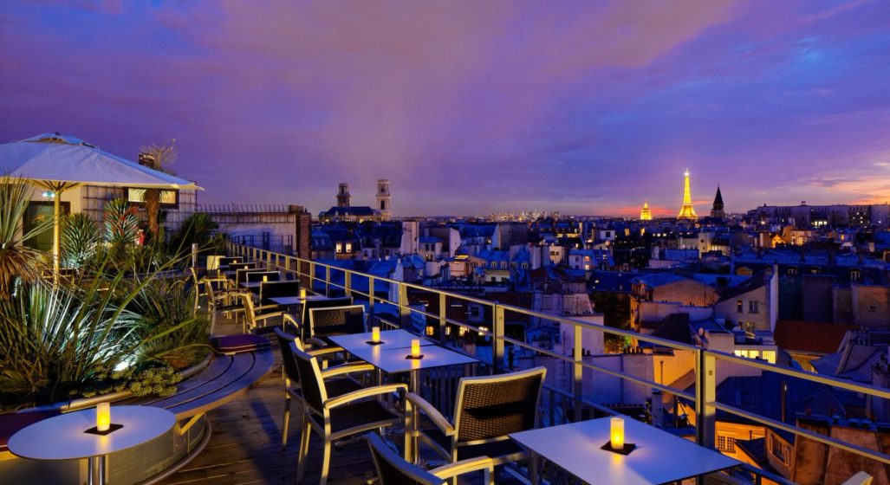

À propos de nous
Dès le début de l'idée, nous savions qu'il y avait certains principes sur la base desquels nous allions construire notre restaurant. L'obligation est devenue encore plus grande lorsque l'esprit bohème de Paris est intervenu.
Nous n'avions pas le choix. La Petit Cler devait devenir, en principe, un lieu où chaque hôte se dira au revoir avec le sourire et auquel il reviendra avec plaisir. C'est pourquoi nous avons combiné en une expérience unique des plats délicieux que nous apprécions nous-mêmes, les meilleurs vins qui peuvent colorer n'importe quel jour et nuit, remplis de musique et d'énergie positive. Bien sûr, nous sommes plus heureux lorsque votre humeur est bonne à cause du principe.
